Marelle
La réhabilitation de l'ancienne école maternelle Gilibert, à Lyon, en tiers-lieu où les étudiants viennent se décharger l'esprit.
Une école pour reprendre son souffle.
Aujourd'hui tout s'accumule : informations, sollicitations, attentes. Cette surstimulation installe chez les étudiants une véritable fatigue mentale.
Marelle transforme l'ancienne école maternelle en tiers-lieu hybride (coworking, bibliothèque, café, repos) pour permettre de se décharger et de retrouver la concentration.
- Maîtrise d’ouvrageMme Suzanne Santoro & M. Laurent Mahadou
- ZonageUCe2a · périmètre UNESCO
- Cour196 m² végétalisés
- ÉquipeE. Buchaille, C. Laumond, L. Morinière, L. Pentenero, F. Poyet
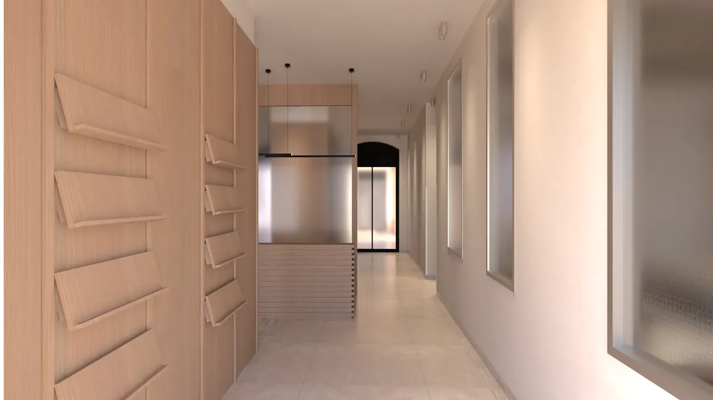
Entrée : casiers en chêne et lumière filtrée par le verre opaque
La sincérité enfantine.
Un rapport au monde direct, instinctif et sans filtre : traduire le lieu dans sa simplicité essentielle, comme le perçoit un enfant. La marelle, jeu d'enfance, devient le fil du parcours.
- SimplicitéOrganisation linéaire et symétrique.
- SpontanéitéSéquences continues, rythmes intuitifs.
- NaïvetéJeu de transparence et de dissimulation partielle.
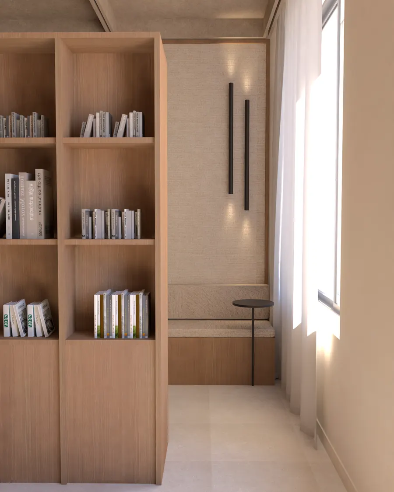
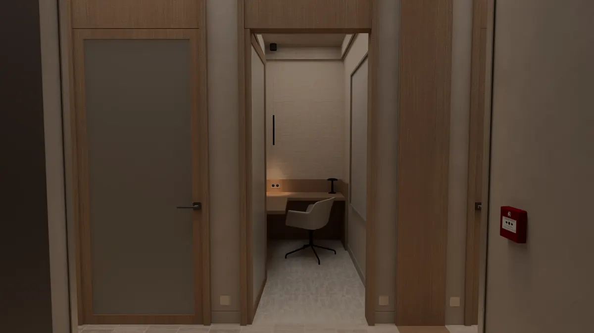
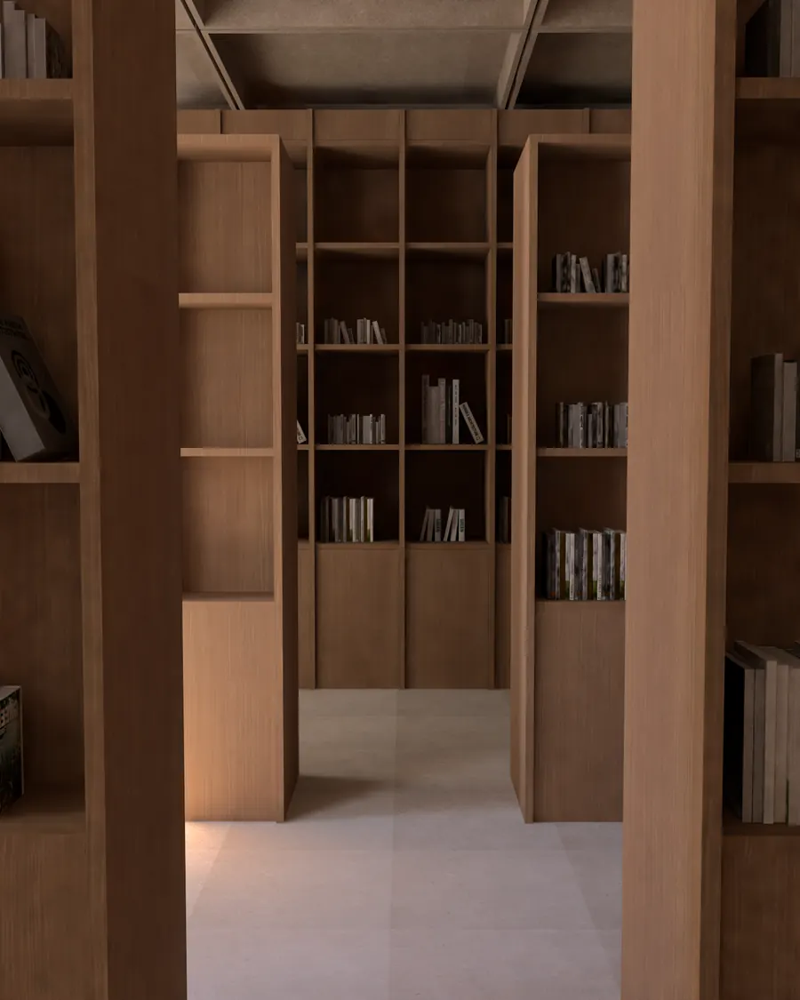
De l'ouvert vers le concentré.
On entre dans un espace de travail ouvert, puis le programme se resserre : cabines de groupe, cabines individuelles, et enfin la bibliothèque, cœur apaisé du projet. La pause (café, jeux, yoga) reste en retrait ; la technique en périphérie.
Deux escaliers en symétrie et un ascenseur central assurent une montée directe et lisible, sans hésitation.
- 01 · TravailOpen space, puis cabines de groupe et individuelles
- 02 · SilenceBibliothèque et repos
- 03 · PauseCafé, jeux, yoga
- 04 · TechniqueEn périphérie, hors du public
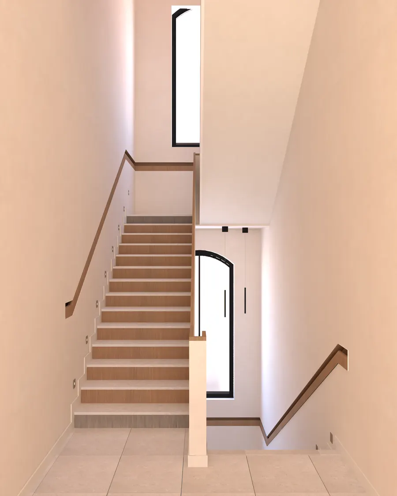
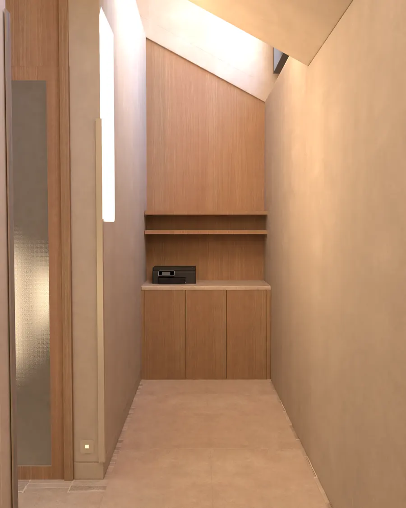
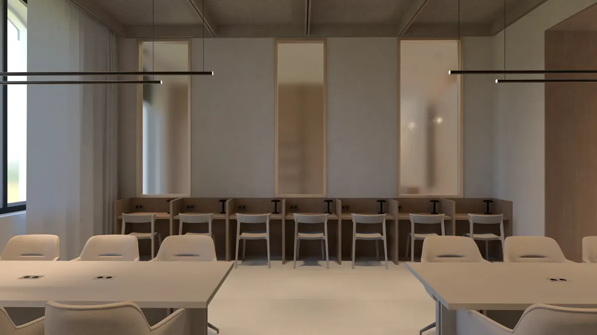
Open space : grandes tables partagées sous les suspensions linéaires
Une matière honnête, sans artifice.
Peu de matériaux, chacun lisible au premier regard. Le chêne apporte la chaleur, la feutrine absorbe le bruit, le carrelage donne le rythme et le verre opaque laisse deviner sans tout montrer.
- M01 · ChêneTexture visible, chaleur, compréhension immédiate
- M02 · FeutrineRevêtements acoustiques, ambiance enveloppante
- M03 · CarrelageRépétition et rythme, repères simples
- M04 · Verre opaquePerception partielle : montrer et cacher
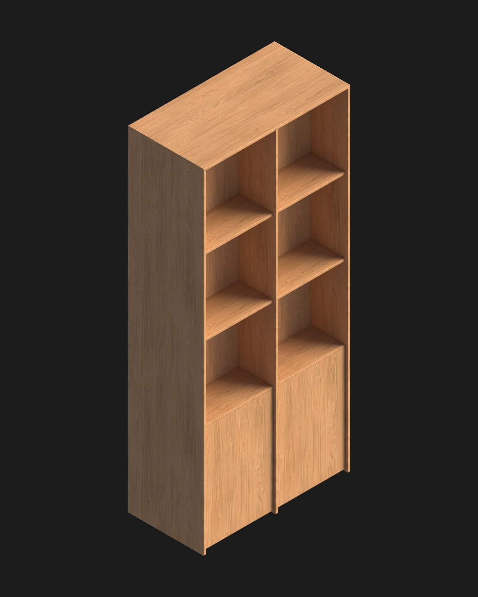
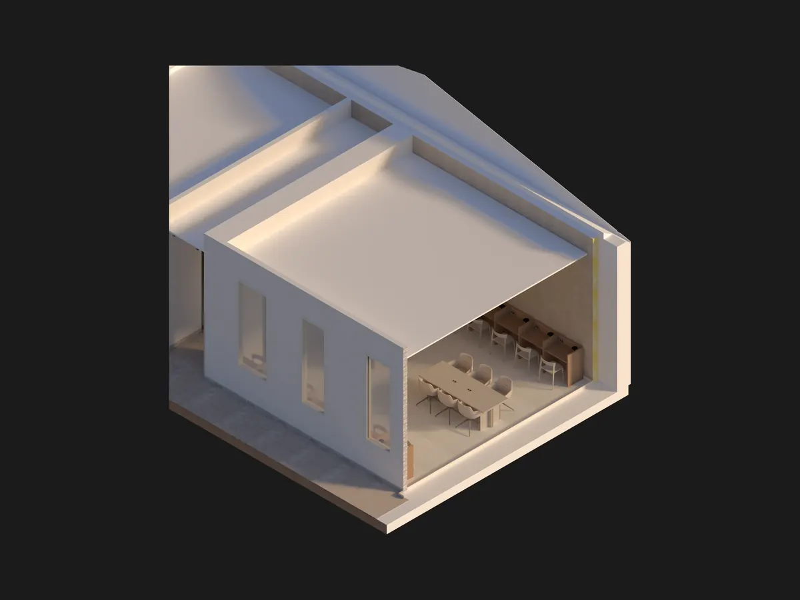
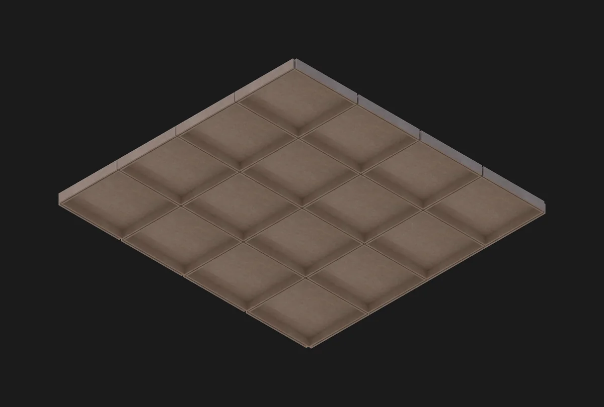
La cour et le passage couvert.
Une charpente en chêne relie le bâtiment au préau et abrite le passage. La cour devient un jardin : surfaces perméables, graminées et assises en bois, pour répondre au coefficient de végétalisation du PLU-H.
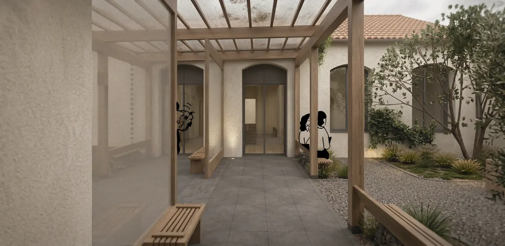


Projet suivant
APEX
Drive & Drink · Projet libre 3e année